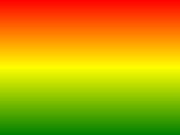

CSS3 Gradients
CSS3 gradients let you display smooth transitions between two or more specified colors.
Previously, you had to use images to achieve these effects. However, by using CSS3 gradients, you can reduce download time and bandwidth usage. In addition, elements with gradient effects look better when zoomed in, because the gradient is generated by the browser.
CSS3 defines two types of gradients:
- Linear Gradients - down/up/left/right/diagonal direction
- Radial Gradients - defined by their center
Linear gradient related properties:background-image。
Linear Gradient Online Tool:Online Gradient Tool。
Browser Support
The numbers in the table specify the first browser version that fully supports the property.
| Property | |||||
|---|---|---|---|---|---|
| background-image | 1.0 | 4.0 | 1.0 | 1.0 | 3.5 |
Note:IE8 and earlier versions of IE browsers do not support this property.
CSS3 Linear Gradients
To create a linear gradient, you must define at least two color stops. Color stops are the colors you want to render smooth transitions between. You can also set a starting point and a direction (or an angle).
Examples of linear gradients:

Syntax
background-image: linear-gradient(direction, color-stop1, color-stop2, ...);
Linear Gradient - from top to bottom (by default)
The following example demonstrates a linear gradient starting from the top. It starts red and gradually transitions to blue:
Example
Linear Gradient - Top to Bottom:
Try it Yourself »
Linear Gradient - Left to Right
The following example demonstrates a linear gradient starting from the left. It starts red and gradually transitions to yellow:
Example
Linear Gradient - Left to Right:
Try it Yourself »
Linear Gradient - Diagonal
You can make a diagonal gradient by specifying the horizontal and vertical starting positions.
The following example demonstrates a linear gradient starting from the top left corner (and going to the bottom right corner). It starts red and gradually transitions to yellow:
Example
Linear Gradient - Top Left to Bottom Right:
Try it Yourself »
Use Angle
If you want more control over the direction of the gradient, you can define an angle instead of a predefined direction (to bottom, to top, to right, to left, to bottom right, etc.).
Syntax
background-image: linear-gradient(angle, color-stop1, color-stop2);
The angle is the angle between the horizontal line and the gradient line, calculated counterclockwise. In other words, 0deg will create a gradient from bottom to top, and 90deg will create a gradient from left to right.

However, note that many browsers (Chrome, Safari, Firefox, etc.) use the old standard, where 0deg will create a gradient from left to right, and 90deg will create a gradient from bottom to top. Conversion formula:90 - x = yWhere x is the standard angle, and y is the non-standard angle.
The following example demonstrates how to use angles on linear gradients:
Example
Linear Gradient with a Specified Angle:
Try it Yourself »
Using Multiple Color Stops
The following example demonstrates how to set multiple color stops:
Example
A top-to-bottom linear gradient with multiple color stops:
Try it Yourself »
The following example demonstrates how to create a linear gradient with rainbow colors and text:
Example
Try it Yourself »
Use transparency (transparent)
CSS3 gradients also support transparency, which can be used to create fading effects.
To add transparency, we use the rgba() function to define color stops. The last parameter in the rgba() function can be a value from 0 to 1, which defines the opacity of the color: 0 means completely transparent, 1 means completely opaque.
The following example demonstrates a linear gradient starting from the left. It starts completely transparent and gradually transitions to a fully opaque red:
Example
A left-to-right linear gradient with transparency:
Try it Yourself »
Repeating linear gradients
The repeating-linear-gradient() function is used for repeating linear gradients:
Example
A Repeating Linear Gradient:
Try it Yourself »
CSS3 Radial Gradients
Radial gradients are defined by their center.
To create a radial gradient, you must also define at least two color stops. Color stops are the colors you want to render smooth transitions between. You can also specify the center of the gradient, the shape (circle or ellipse), and the size. By default, the center of the gradient is center (meaning at the center point), the shape is ellipse, and the size is farthest-corner.
Examples of radial gradients:

Syntax
background-image: radial-gradient(shape size at position, start-color, ..., last-color);
Radial Gradient - evenly distributed color stops (by default)
Example
Radial Gradient with Evenly Spaced Color Stops:
Try it Yourself »
Radial Gradient - unevenly distributed color stops
Example
A radial gradient with unevenly distributed color stops:
Try it Yourself »
Set Shape
The shape parameter defines the shape. It can be the value circle or ellipse. Here, circle means a circle, and ellipse means an ellipse. The default value is ellipse.
Example
Radial Gradient Shaped as a Circle:
Try it Yourself »
Use of Different Size Keywords
The size parameter defines the size of the gradient. It can be one of the following four values:
- closest-side
- farthest-side
- closest-corner
- farthest-corner
Example
Radial gradients with different size keywords:
Try it Yourself »
Repeating radial gradients
The repeating-radial-gradient() function is used for repeating radial gradients:
Example
A Repeating Radial Gradient:
Try it Yourself »